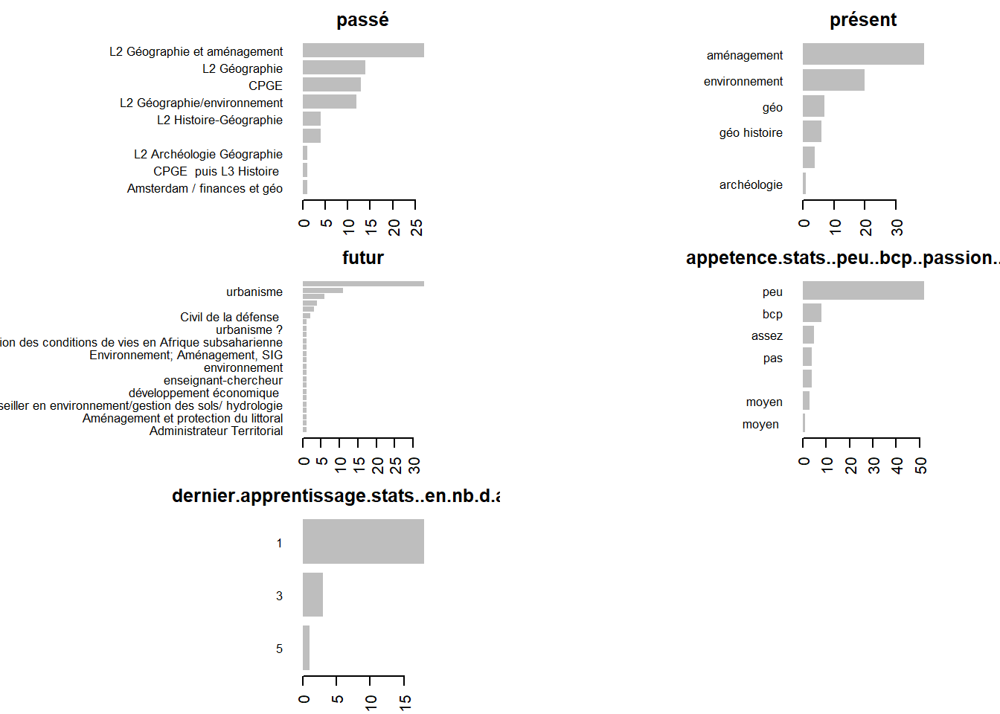
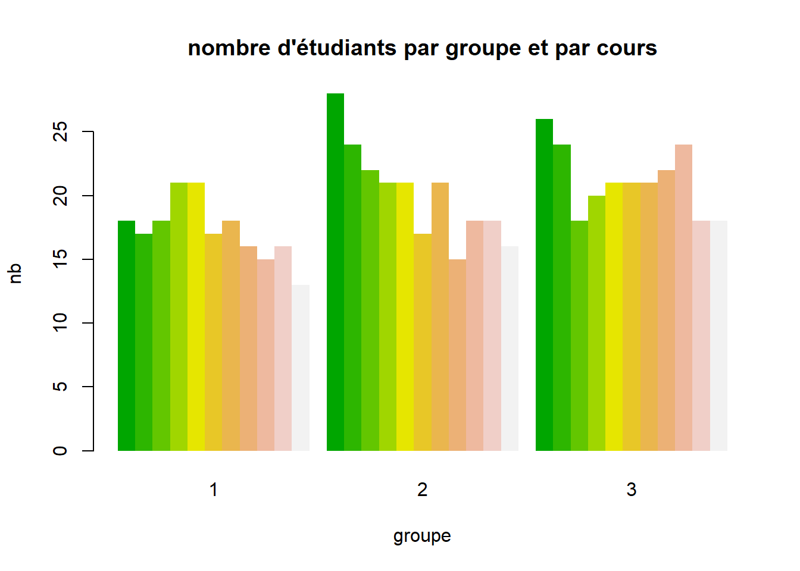
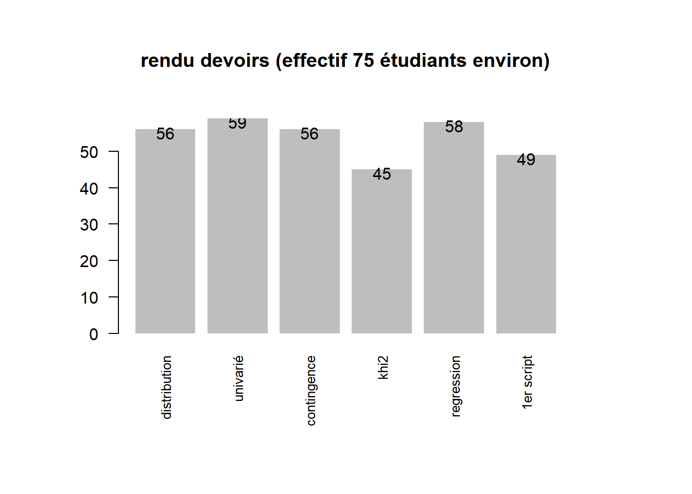
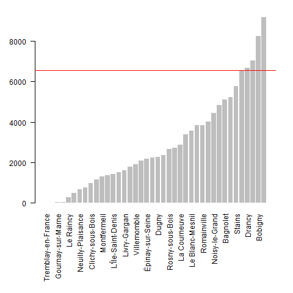

“L5GEABIM Analyses bivariées et multivariées”
data <- read.csv("data/presentation.csv", encoding = "UTF-8", header = F)
knitr::kable(data, col.names = c("groupe", "heures", "enseignant") )| groupe | heures | enseignant |
|---|---|---|
| Gr. 1 | 8h - 9h30 | Béatrice MARANGET |
| Gr. 2 | 9h30 - 11h | Béatrice MARANGET |
| Gr. 3 | 14h - 15h30 | Béatrice MARANGET |
Il va être modifié en fonction de
A chaque cours un exercice à faire pour le prochain cours, quelque soit l’avancement du cours. Utiliser les ressources internet, poser des questions,…
13 cours en tout. 2 cours d’intro rappels stats 7 sur la stat bi-variée 3 sur la multivariée 1 cours pour un devoir sur table au mi-semestre
… et c’est tout ! (pas de partiel)
Au départ on utilise Libre Office (plutôt que Microsoft) puis R
Question : quelle utilisation de R ? des cours cette année ?
data <- read.csv("data/deroule.csv", encoding = "UTF-8")
knitr::kable(data)| Num.cours | date | thème | outil |
|---|---|---|---|
| 1 | 12/09/2022 | statistique univariée : base | tableur |
| 2 | 19/09/2022 | statistique univariée : indicateurs | |
| 3 | 26/09/2022 | bivariée : base | |
| 4 | 03/10/2022 | contingence | |
| 5 | 10/10/2022 | Khi 2 | |
| 6 | 17/10/2022 | régression | |
| 7 | 24/10/2022 | devoir sur table | |
| 8 | 31/10/2022 | Fin régression / Initiation R | R |
| 9 | 07/11/2022 | initiation R | |
| 10 | 14/11/2022 | multivariée : multifactorielle + sujet de devoir | |
| 11 | 21/11/2022 | classification | |
| 12 | 28/11/2022 | questions autour du devoir maison. Devoir à rendre le 8 au plus tard. | |
| 13 | 05/12/2022 | rendu du devoir maison et bilan formation |
passé / présent / futur appétence pour les stats fichier framapad, https://lite.framacalc.org/9pse-coursstatsorbonne2022-9we9
74 étudiants sur 3 cours
Attention, 5 doublons de prénoms (Ambre, Camille, Marie, Roxane et Sarah), j’ai rajouté l’initiale du nom de famille.
## character(0)
| 1 | 2 | 3 | |
|---|---|---|---|
| cours1 | 24 | 21 | 29 |
| cours2 | 24 | 21 | 29 |
| cours3 | 10 | 19 | 28 |

Désormais le framapad sert à l’émargement https://lite.framacalc.org/9pse-coursstatsorbonne2022-9we9
rendu <- c(47,36, 29)
titre <- c("distribution", "univarié", "khi2")
barplot(rendu, names = titre, main = "rendu devoirs (effectif 75 étudiants)")
# les notesAu 3e devoir, sur 29 rendus, uniquement
https://www.data.gouv.fr/fr/datasets/repertoire-des-logements-locatifs-des-bailleurs-sociaux/
Prendre le .zip de 2021, petit test d’ouverture sous moodle (Introduction/bases informatiques)
data <- read.csv("data/rpls2021_geolocalise_OD_REG11_DEP93.csv", sep =";")
# distribution par commune
tab <- table(data$LIBCOM)
png("img/rpls93.png")
par(mar = c(10,4,2,2))
barplot(sort(tab), las = 2, border = NA, cex.names = 0.7)
abline(tab [ names(tab) == "Bondy"],0, col ="red")
dev.off()
write.csv(sort(tab), "data/dpt93RPLSCommune.csv")
# filtre sur Bondy
filtre <- data [data$LIBCOM == "Bondy",]
write.csv(filtre, "data/rplsBondy.csv")
C’est normalement ce fichier de données que nous allons utiliser pour le cours.
Il y a un problème sur la donnée, prendre plutôt le millésime 2019
Lorsque l’exercice le requiert, le fichier est à rendre avec son prénom (toujours le même svp) sous moodle.
2 cours universitaires disponibles sur internet
Il s’agit de prendre minimum 4 variables socio économiques à partir de l’outil insee statistiques locales et de faire dessus une analyse factorielle et une classification en affinant au fur et à mesure (exclusion des valeurs particulières ou choix d’échantillons). Le devoir maison est à rendre sous forme de script R commenté (avec des #) avec le fichier de données en .csv
dates :
soumission du sujet : 22/11 et 29/11, chaque étudiant doit proposer ses variables
travail sur le devoir en classe
rendu du devoir par les étudiants
le devoir sera rendu sur la dernière séance
L5GEABIM Analyses bivariées et multivariées